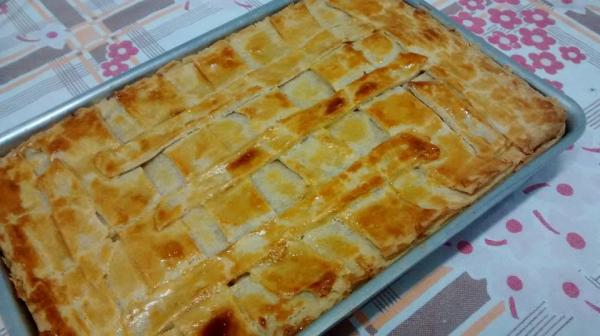

Empadao

Empadao Quentinho
Um empadao é uma comida típica portuguesa que junta um bocadinho de carne, um bocadinho de massa, um bocado de
massa com carne folhada.
Ingredients
- Massa Folhada
- Carne da boa
- Tomate Fresco
- Massa de Carne
- Molho bolonhesa
Steps
- Fazer a Massa com as mãos e um rolo de massa
- Distribuir uniformemente o tomate e juntar a massa folhada
- Juntar uniformemente a carne da boa e dispor em camadas
- Levar ao forno 180 graus e ao fim de 60 min está pronto